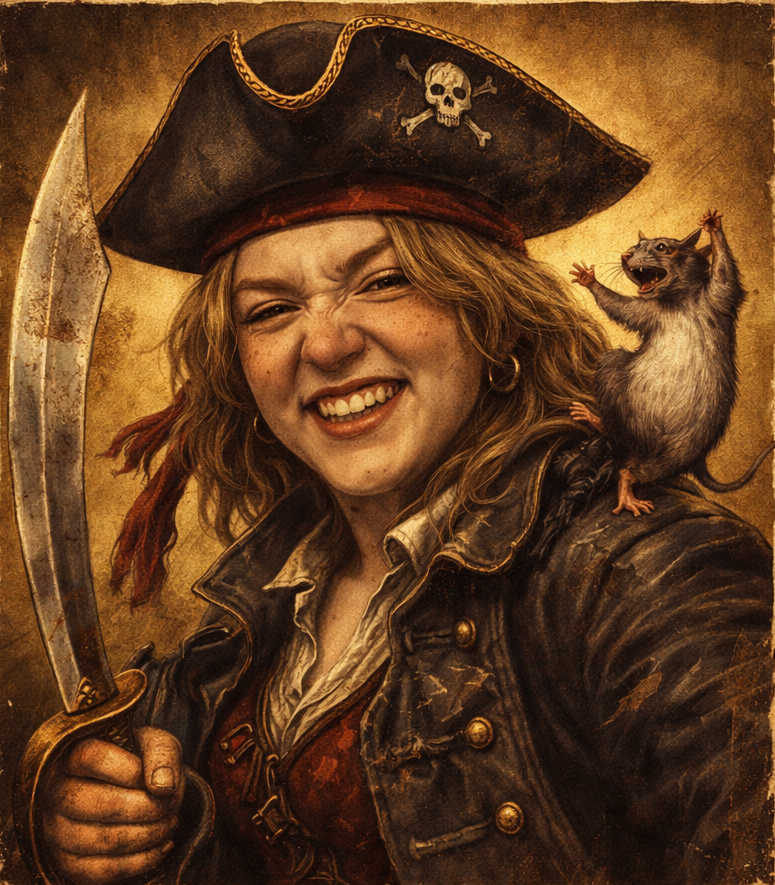
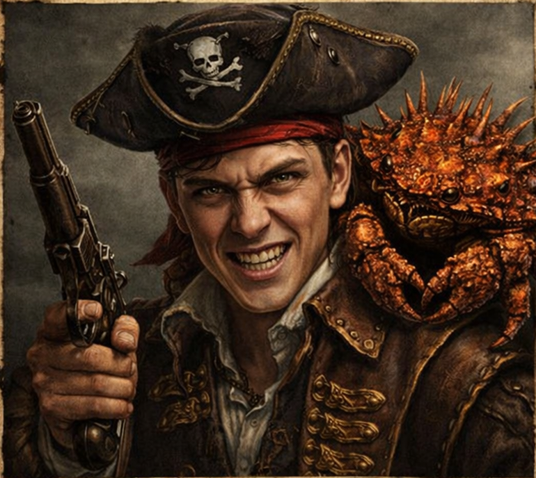
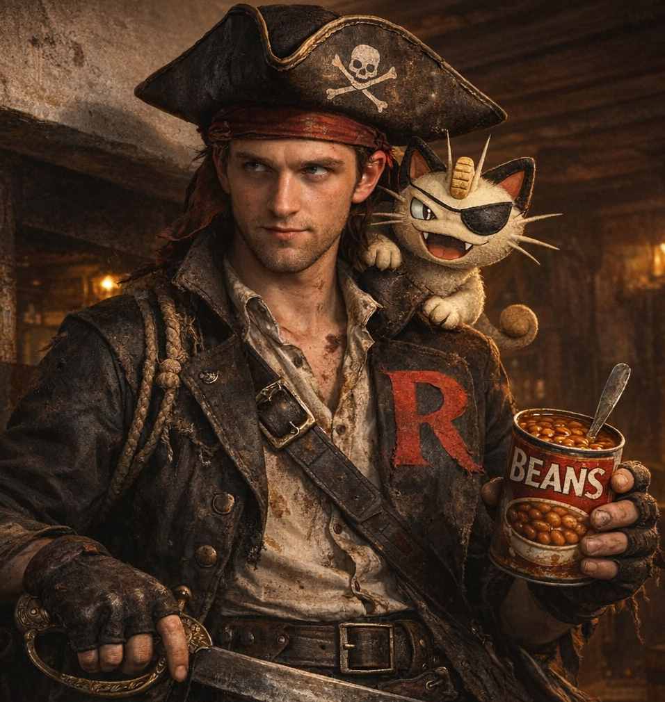
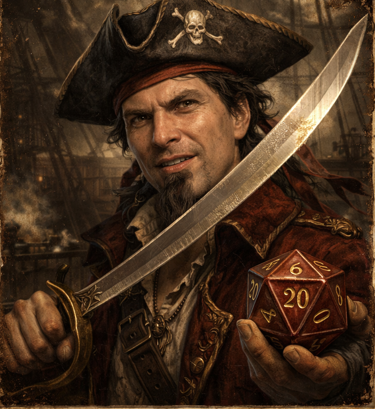
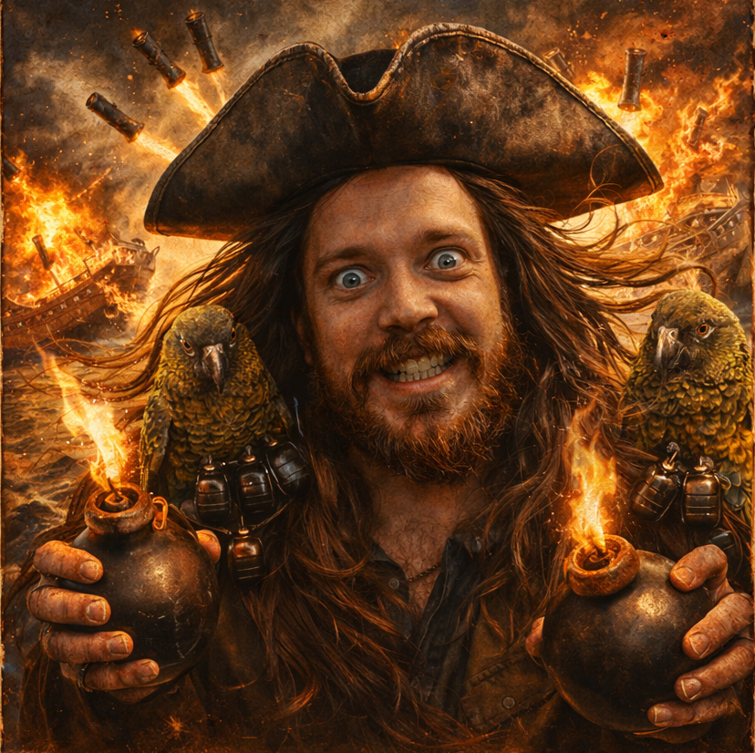
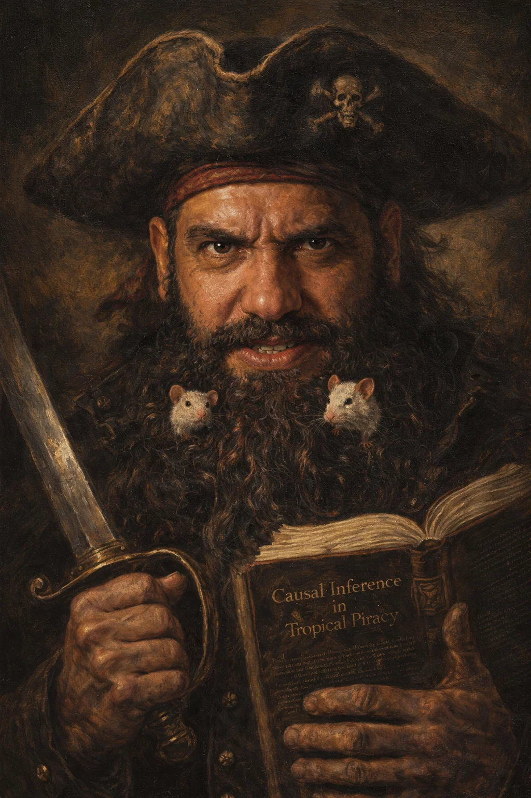

Captain Overrun

Crime: Lectures went over time.
Reward: A perfectly working clock
First mate RunBoot

Crime: Got caught training the ship rats to dance
Reward: A dancing rat
Captain Ferris "Borrow-checker" Blackflag

Crime: Excessive Rust advocacy during lab sessions and grand theft Bjarne.
Reward: Memory safety and fearless concurrency - at zero cost
Meowth the Marauder and Jørgen the talking Human

Crime: Sold a TA guide to Team Rocket
Reward: Unused Master Ball
First mate Walker

Crime: Trespassing
Reward: Lae'zel's phone number
Captain Crash

Crime: Didn't validate gunpowder input to ship cannons
Reward: 5 tons of scrapmetal and broken wood
Captain Mouse-Crowded Beard

Crime: Be it known to all honest Subjects of the Crown that the villain Captain Mouse-Crowded Beard of the Savage Coast, born of the jungles of Brazil and forged in the frozen darkness of Viking Lands of Norway, doth terrorize the waters from Recife to Kingston upon his dreaded vessel, The Black Box. He is recognized by his incessant lecturing to hostages on "biologically plausible approaches to plunder" and his refusal to fire cannons until a proper cost-benefit analysis hath been completed. His crew, the Reinforcement Learners, grow stronger with every raid through what the captain calls "reward-shaped looting." He is armed with a cutlass in one hand and a manuscript on Causal Inference in Tropical Piracy in the other. Approach with extreme caution — he will not stop talking.
FORMAL CHARGES
- Unlawful Conversion of a Royal Navy Frigate into a Floating University, complete with tenure-track positions for parrots
- Kidnapping the Governor of Barbados and subjecting him to a four-hour seminar on "Spiking Neural Networks and Their Application to Rum Distillation"
- Emotional Piracy — making a British Admiral cry by proving, through Bayesian inference, that his entire career had been statistically insignificant
- Replacing all navigational charts of the Caribbean with hand-drawn diagrams of associative learning models, causing twelve ships to become hopelessly philosophical
- Stealing and changing the administrative wifi of the University to monopolize the bandwidth to watch a marathon of all seasons of Startrek in 4K.
Reward: One wish granted by the AI Overlords. Must be submitted in binary.